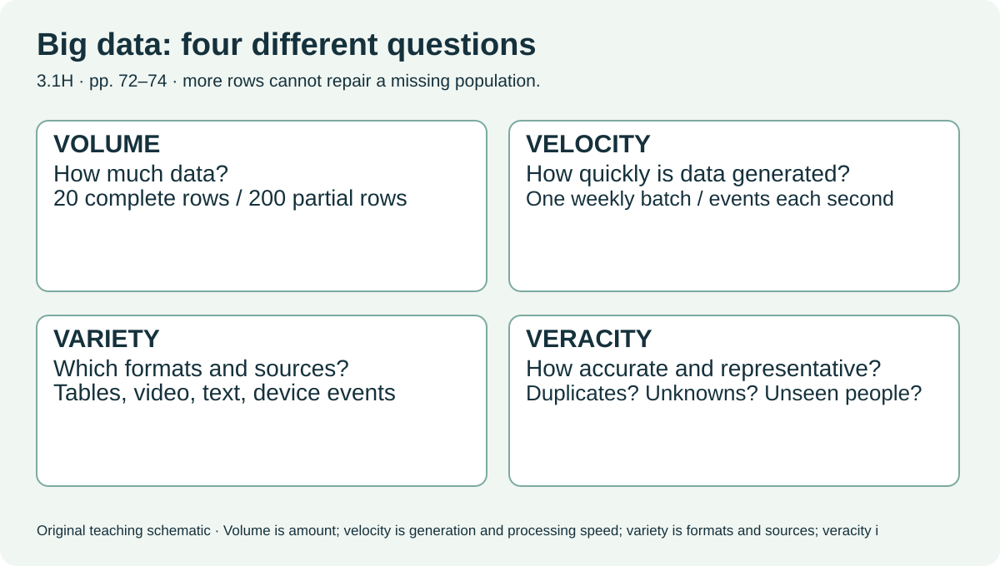
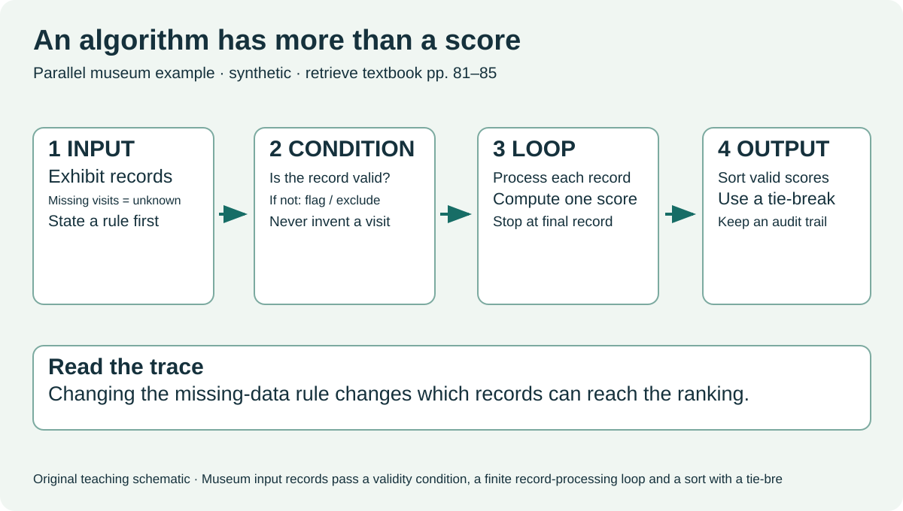
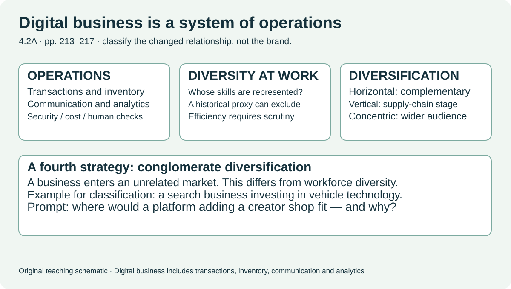

Bomfim et al., Digital Society, Hodder, 2022. These are printed textbook pages. Use your licensed textbook for the complete material; the deck contains original explanations and new practice rather than reproduced pages.
Weekly reading: pp. 86–89, 72–74 and 213–219. Monday pp. 81–85 is prior-knowledge retrieval. These are parts of three chapters, not three whole chapters.
3.1 Data and data analysis

Big data involves scale, speed, different formats and quality. Analytics processes data to find patterns that may inform decisions. Separate the size of a dataset from how well it represents the people affected. Page 74 begins data dilemmas at collection: necessity, consent and skew in who is represented.
- Volume ≠ veracity: 200 incomplete logs can offer weaker evidence than 20 complete relevant logs.
- A fast stream may require processing decisions before a human can inspect each event.
- A watch or skip is an observed action; preference and intention are interpretations.
Check without notes: You inherit 200 watch logs with no exposure records and 20 complete exposure/interaction records. Which question could each dataset answer? What can neither establish?
3.2 Algorithms and code

Retrieve input, output, sequence, condition, finite loop, search and sort. Then review algorithmic dilemmas: consistent automated decisions can improve efficiency while an inappropriate proxy, incomplete data or biased development can systematically skew results. Black-box opacity concerns how a result can be understood; accountability concerns who explains, corrects or takes responsibility. Publishing a rule does not make its outcomes fair.
- Trace a record through an actual condition and a stopping rule.
- Identify a biased sample or proxy separately from opacity.
- Use page 89’s source-usefulness inquiry: origin, purpose, claims and limits.
Check without notes: A hypothetical recruitment tool ranks applicants by uninterrupted employment. Who might be disadvantaged, why, and what evidence would test that concern? Would making the score public solve it?
4.2 Economic

Review digital business operations (transactions, inventory, communication and analytics), business diversification, and workforce diversity and automated hiring. Horizontal diversification adds complementary products; vertical takes a supply-chain stage; concentric adapts related products to a wider audience; conglomerate enters an unrelated market. Diversity concerns people represented in a workforce. Digital work can be remote and mediated by platforms; benefits depend on access, security, bargaining power and the terms of work.
- Crowdsourcing seeks ideas or work; crowdfunding seeks money.
- Microwork is a small paid task; gig platforms match task-based services and demand.
- Sharing uses access to assets or services; it can overlap with a gig economy.
- Hiring efficiency, inclusive opportunity and applicant privacy may conflict.
Check without notes: A creator shop, a remote editor, a fundraising campaign and a platform matching one-off translation jobs: classify the business or work relationship and defend one trade-off. Do not sign up for a platform to do this task.
Revisit: Tuesday retrieve Monday’s missing-data rule; Wednesday retrieve the changed ranking term; Thursday quiz includes four older-learning items; Friday apply Thursday feedback without notes; next d07 retrieve the loop and source limitation on a changed case. The Monday retry is a separate Sprint 2 identity/data-flow assessment.